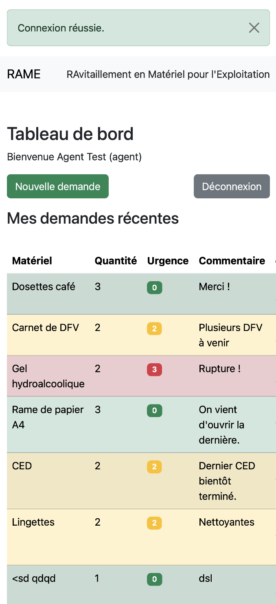

Projet RAME (Application interne SNCF)
Application interne pensée pour simplifier et fluidifier les échanges métier à la SNCF (aiguillage). Présentée sur la plateforme Léonard, en cours d’étude. UX simple, vision orientée agents terrain.
Un professionnel hybride au service du concret et de la tech utile.
Découvrir mes projetsJe suis Gaby, développeur polyvalent et professionnel tech aux multiples casquettes, avec un parcours solide mêlant développement web, gestion de projets, et expertise métier terrain. Passionné par la technologie et l’innovation, j’ai su bâtir une expertise pragmatique en maîtrisant des langages clés comme HTML, CSS, JavaScript, PHP, ainsi que des outils métiers et systèmes complexes. Ma force ? Une capacité avérée à apprendre rapidement, à résoudre des problèmes concrets, et à livrer des solutions fiables et scalables. Je ne suis pas un simple touche-à-tout : je suis un généraliste expert, capable d’intégrer des environnements hétérogènes et d’apporter une vraie valeur métier. J’ai développé des applications web de gestion, internalisé des process RH complexes via des logiciels dédiés, et piloté la création d’un centre de formation de A à Z. Mes compétences couvrent aussi bien le développement front-end que les architectures back-end, avec un regard affûté sur la sécurité, la performance et l’ergonomie. Je suis aujourd’hui en quête de nouveaux défis dans la tech, où je pourrai mettre à profit ma rigueur, ma polyvalence, et mon envie constante d’évoluer dans un environnement agile et innovant.

Création complète d’un site vitrine dédié à une boutique d’accessoires pour animaux. Conception responsive et optimisée pour tous types d’écrans, intégration d’un design moderne et convivial, mise en place d’un système de gestion de contenu simple à utiliser. Focus sur l’expérience utilisateur et la mise en valeur des produits, avec optimisation SEO basique pour améliorer la visibilité en ligne.
Vous souhaitez collaborer, me recommander ou en savoir plus sur mes projets ? N’hésitez pas à me contacter via GitHub ou sur LinkedIn.